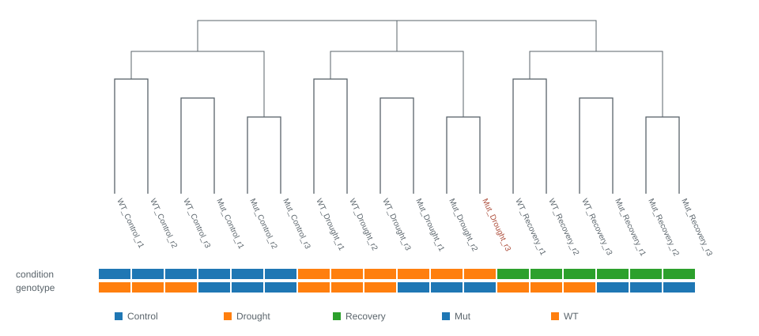
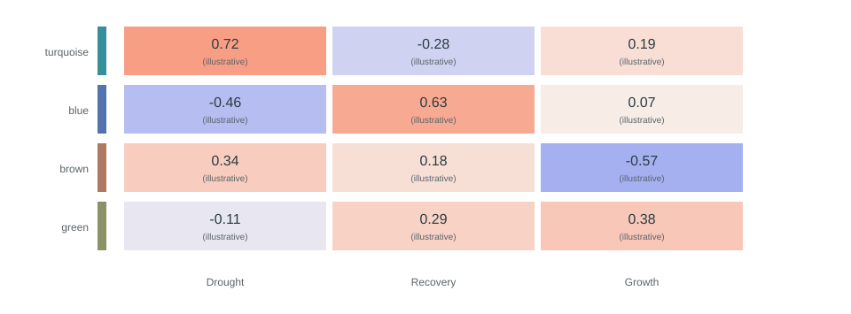
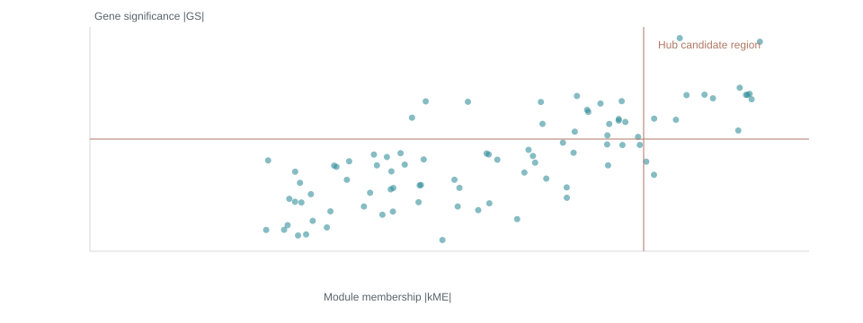
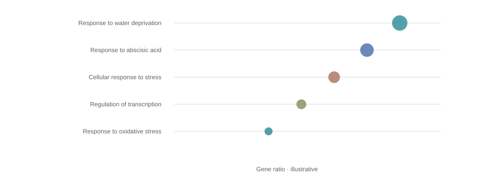

本例从 18 个样本 × 24,000 个基因开始。用户手动排除了 Mut_Drought_r3，剩余 17 个样本。本例选择保留原始 read count，不做数值转换。
加权基因共表达网络分析
拟南芥 · 干旱应答 · 示例项目
从表达矩阵，
到共表达网络。
一份可追溯的分析记录。从输入文件、数据筛选到模块解析，逐步说明本次分析做了什么，以及每张图应该怎么看。
Arabidopsis_drought · 2026-10-27 14:30 +08:00 · rsWGCNA v0.5.0
18 → 17输入 / 保留样本
8,000进入网络的基因
4共表达模块（不含 grey）
30展示的 Hub 候选
风格审阅样张：本页数字、图表、文件名和结果均为模拟示例，不代表对现有数据的分析。可下载的矩阵只含 8 行，用于检验下载体验。正式报告将替换为本次任务的真实结果。
01
输入与背景
先记录分析从哪里开始。样本信息完整展示，并保留输入文件与注释背景的统计口径。
| 输入文件 | 文件名（示例） | 内容 |
|---|---|---|
| 表达矩阵 | counts.tsv | 18 样本 × 24,000 基因；原始 read count |
| 样本信息 | sample_info.tsv | 18 行；样本 ID、基因型、条件、重复 |
| 性状来源 | sample_info.tsv → condition | 本次选择的性状列 |
| 基因注释 | annotation.tsv | 24,000 个唯一基因；21,300 个具有描述 |
| GO | gene2go.tsv | 17,920 个唯一基因；4,260 个唯一 GO term；52,100 条去重映射 |
| KEGG | gene2kegg.tsv | 5,842 个唯一基因；137 条通路；12,640 条去重映射 |
完整样本信息 18 行
| 样本 ID | 基因型 | 条件 | 重复 | 分析状态 |
|---|---|---|---|---|
| WT_Control_r1 | WT | Control | 1 | 保留 |
| WT_Control_r2 | WT | Control | 2 | 保留 |
| WT_Control_r3 | WT | Control | 3 | 保留 |
| Mut_Control_r1 | Mut | Control | 1 | 保留 |
| Mut_Control_r2 | Mut | Control | 2 | 保留 |
| Mut_Control_r3 | Mut | Control | 3 | 保留 |
| WT_Drought_r1 | WT | Drought | 1 | 保留 |
| WT_Drought_r2 | WT | Drought | 2 | 保留 |
| WT_Drought_r3 | WT | Drought | 3 | 保留 |
| Mut_Drought_r1 | Mut | Drought | 1 | 保留 |
| Mut_Drought_r2 | Mut | Drought | 2 | 保留 |
| Mut_Drought_r3 | Mut | Drought | 3 | 已排除 |
| WT_Recovery_r1 | WT | Recovery | 1 | 保留 |
| WT_Recovery_r2 | WT | Recovery | 2 | 保留 |
| WT_Recovery_r3 | WT | Recovery | 3 | 保留 |
| Mut_Recovery_r1 | Mut | Recovery | 1 | 保留 |
| Mut_Recovery_r2 | Mut | Recovery | 2 | 保留 |
| Mut_Recovery_r3 | Mut | Recovery | 3 | 保留 |
表 1 · 原始上传的 18 行均在此处；红色行表示后续手动排除的样本。样本 ID 与文件中的内容保持原样。 下载样本表
背景文件的“唯一基因数”“唯一条目数”和“映射行数”分别统计。GO/KEGG 文件覆盖量不等于富集分析实际背景：正式报告还需列出所选背景与进入分析基因集的交集大小、未匹配 ID 和重复映射数。
02
最终参数
这里记录实际运行成功的最终参数。正文解释分析决策，完整参数表用于复查与复现。
清洗过滤
| 参数 | 最终值 |
|---|---|
| normalize_method | "raw" |
| sample_percentage | 0.5 |
| cutoff | 10 |
| filter_method | "mad" |
| n_keep | 8000 |
| exclude_samples | ["Mut_Drought_r3"] |
软阈值搜索
| 参数 | 最终值 |
|---|---|
| network_type | "signed" |
| rsquared_cut | 0.85 |
网络构建
| 参数 | 最终值 |
|---|---|
| power | 8 |
| network_type | "signed" |
| tom_type | "signed" |
| tom_denom | "min" |
| min_module_size | 30 |
| merge_cut_height | 0.25 |
| deep_split | 2 |
| detect_cut_height | 0.995 |
模块与性状
| 参数 | 最终值 |
|---|---|
| trait_source | "sample_info" |
| trait_column | "condition" |
模块深入
| 参数 | 最终值 |
|---|---|
| select_module | "turquoise" |
| select_trait | "Drought" |
Hub 筛选与网络
| 参数 | 最终值 |
|---|---|
| select_module | "turquoise" |
| select_trait | "Drought" |
| kme_cutoff | 0.8 |
| gs_cutoff | 0.5 |
| weight_threshold | 0.02 |
| power | 8 |
| top_n_neighbors | 20 |
| max_hubs | 30 |
下载完整参数 JSON示例参数；正式导出读取各步骤实际使用的参数，而非尚未运行的界面值。
03
过滤与样本质控
明确区分样本删除、低表达过滤和高变基因选择，避免把所有减少都归因于“噪音”。
如果一个基因在超过 50% 的保留样本中 read count 小于 10，就因低表达被去除。对于本例的 17 个样本，这意味着至少 9 个样本低于 10 才会被过滤。这个步骤去掉 7,600 个基因，留下 16,400 个。
随后去掉样本间表达完全不变的 400 个基因，再按照中位数绝对离差（MAD）从大到小排序。MAD 描述一个基因在不同样本之间的表达波动；本例保留排名前 8,000 个基因进入后续网络分析，其余 8,000 个未入选。未入选不等于这些基因没有生物学意义。
输入24,00018 个样本
→去低表达后16,40017 个样本
→去零变异后16,000MAD > 0
→用于建网8,000MAD 排名前 8,000
| 删除的样本 | 操作 | 原因 |
|---|---|---|
| Mut_Drought_r3 | 用户手动排除 | 未填写；不推测质量问题 |
正式导出：result/02_filter/expression_filtered.tsv，保存完整的 8,000 基因 × 17 样本矩阵。本样张的 8 行文件仅演示链接，不冒充完整结果。

怎么看：相邻分支表示表达模式更相似。色带从上到下严格使用用户选择的 condition、genotype；类别使用 app 默认调色板。红色标签标识手动排除项。此图为布局示意，不能据此判断真实离群样本。正式报告同时保留删除前和最终样本树，并复用 app 的叶序、色带、标签和颜色。
04
软阈值选择
先观察候选值，再记录最终采用值及其选择依据。
本例使用 signed 网络，选择 β = 8。示例拟合曲线在此首次达到 R² ≥ 0.85。软阈值会放大较强相关、减弱较弱相关；正式报告需同时展示平均连通性及 scale-free 检验，并说明 β 是自动推荐还是用户指定。

怎么看：横轴是候选 β，纵轴是拟合指标。虚线是本次目标线，棕色点是采用值。达到目标线只是选参依据之一，不能单独证明网络可靠。
05
网络与模块
将表达模式相似的基因分组，并记录未分配基因。
本例根据 signed 网络的拓扑重叠关系聚类，再识别基因模块。最小模块大小设为 30，模块合并距离阈值为 0.25。示例最终有 4 个模块，另有 200 个 grey 基因未分配到模块；grey 不计入模块总数。

怎么看：下方同色区域表示同一模块，模块色仅作名称标识。正式报告保留 app 中展示的合并前 / 合并后色带及其原始标签，不重新命名。
| 模块 | 基因数 | 占建网基因比例 |
|---|---|---|
| ● turquoise | 2,700 | 33.75% |
| ● blue | 2,200 | 27.50% |
| ● brown | 1,800 | 22.50% |
| ● green | 1,100 | 13.75% |
| ● grey | 200 | 2.50% |
06
模块与性状
用模块特征向量概括模块表达，再与所选性状比较。
模块特征向量（ME）是模块表达的主要变化模式，并不是某一个“代表基因”。热图展示 ME 与性状的相关系数；正式结果还需显示 p 值，并标明检验方法和是否校正多重比较。

怎么看：红色偏正相关，蓝色偏负相关，颜色越深表示绝对相关越强。相关性不代表因果关系。这个示意图没有真实 p 值，也不作显著性结论。
07
模块深入与富集
围绕用户选定的模块与性状，整理基因表现与功能线索。
所选模块: turquoise所选性状: Drought

怎么看：每个点是一个基因。|kME| 越大，表达模式与模块越一致；|GS| 越大，与目标性状的关联越强。虚线示范候选筛选边界，正式图使用当前 app 的相关方向、阈值与坐标设置。

怎么看：每一行是一个功能条目，点的位置表示入选基因比例。正式图的点大小、色阶、校正后 p 值及 GO / KEGG 背景均按 app 当前设置导出；此示意图不作富集结论。未提供背景、未运行或无显著条目时，报告应明确标明对应状态。
08
Hub 基因
把“候选筛选”与“网络展示”分开记录，避免将展示数量误作全部候选数量。
本例在 turquoise 模块、Drought 性状下，用 |kME| ≥ 0.8、|GS| ≥ 0.5作为筛选条件，示例有 42 个候选。网络最多展示 30 个 Hub，每个最多保留 20 个邻居，边权重下限为 0.02。正式报告以引擎实际采用的比较符号、排序和截断规则为准，并导出全部候选与最终展示的节点 / 边。

怎么看：节点表示基因，连线表示通过阈值的共表达关系。此图仅供审阅视觉风格；正式报告使用 app 的当前网络节点、边、位置、标签、大小及颜色，避免导出时随机重排。
09
文件与复现
让阅读报告的人能回到原始图表、数据和分析设定。
| 内容 | 路径 | 说明 |
|---|---|---|
| HTML | report/index.html | 本语言的报告入口 |
| Quarto | report/report.qmd | 可重新编译的报告源文件 |
| 全部图表与表格 | result/01_input/ … 07_hub/ | 按报告步骤编号归档 |
| 读图说明 | result/README.txt | 文件索引、字段和读图方法 |
| 分析记录 | result/00_provenance/ | 最终参数、视图快照、环境和文件校验 |
本预览使用项目内的 SVG、CSS 和 JavaScript，无在线字体或图表 CDN。完整复制项目文件夹后即可离线打开 report/index.html。正式导出默认使用 app 当前语言；中文和英文是分别生成的报告，不在一个报告里混排。